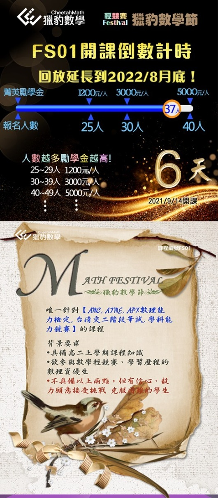

「立足台灣 胸懷天下」
宗翰老師常言：
風聲 雨聲 讀書聲
聲聲入耳
家事 國事 天下事
事事關心
獵豹團隊的老師們身體力行，除了大量的藏書、期刊，他們平常也積極在各國網路社群 交流、蒐集資訊。台灣、中國大陸、歐美、俄羅斯、南美、土耳其、…資訊都不放過，教學參考資料非常豐富，在台灣堪稱翹楚！
他們再三強調網路上有很多寶貴的資源，提醒學生要善加利用！
尤其台灣的孩子不要把自己限制在繁體字媒體（資訊太少 太窄、太慢）不論繁體字、簡體字、尤其是英文都要成為自己能閱讀的語文！
以前常聽宗翰老師和硯吉老師推薦：要準備各級數學競賽(IMO,APMO,USAMO,AIME,AMC,學科能力競賽….），或是想成為一流的解題高手就去AOPS這網站找資料！初創於2003年，全名為 Art of Problem Solving的網站，創辦者Richard Rusczyk，畢業於普林斯頓大學是1989年的IMO金牌得主。當年Richard毅然放棄在華爾街對沖基金待遇優渥的工作，回到自己熱愛的數學教育工作，創辦了這個數學網站。
它就像美國數學界的「Hogwarts School 」，是各年齡段孩子數學學習、交流的平台，目前已發展成全球最大的線上數學競賽學習社區。
這裡有各式各層級歷年的數學競賽題目和解答（從國中到大學），世界各地的數學高手大量在此交流。孩子們可能對英文閱讀感到畏懼，其實這些數學的英文很容易，沒有困難的用語或是時態、文法。句型都很簡單，只要知道一些常用的數學專有名詞，練習一陣子，英文程度較好的國中同學都可以看懂。
大家多加嘗試，由此開始，讓英文成為自己學習的利器！
獵豹的數學輕競賽課程，老師們有時會拿幾個英文題目在課堂上解說，讓同學增進閱讀英文數學題的能力與信心。
獵豹的誠聰老師非常熱心，把AMC常用專有名詞列表整理，明天與大家一起分享！
https://www.facebook.com/groups/695697124716309/permalink/884549535831066/
